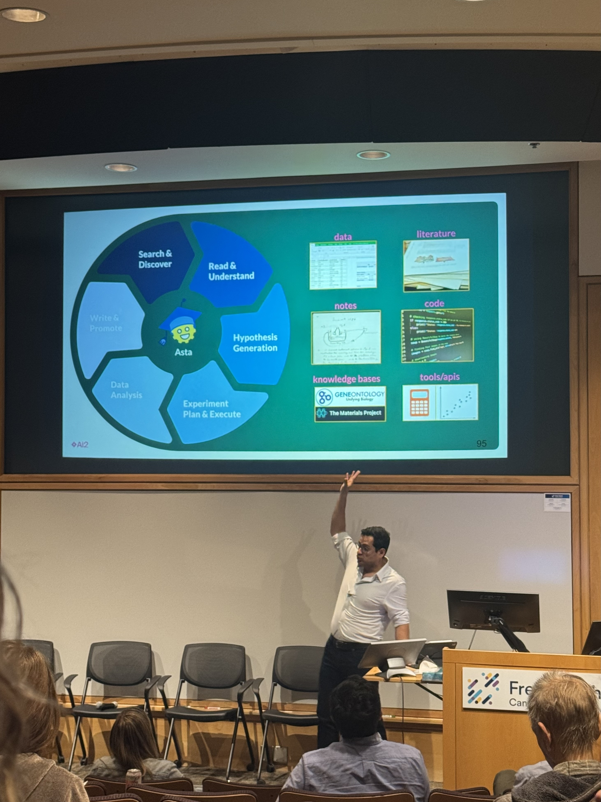

Welcome back to another post from [VS]Codes! Last week, I had the opportunity to attend the Fred Hutch Sloan Precision Oncology Institute’s AI Symposium, co-hosted by Dr. Eric Collisson, Director of Translational Integration at the Sloan Precision Oncology Institute and Dr. Jeff Leek, Fred Hutch’s Chief Data Officer. The focus of the symposium was to bring together leading researchers, clinicians, and technologists to explore how artificial intelligence, in particular, large language models (LLMs) and multimodal learning, can transform precision oncology. This blog post summarizes my notes from each of the panels that I attended and offers some of my biggest overall takeaways.

1. AI in Healthcare
Hannaneh Hajishirzi (University of Washington and Allen Institute for AI) – Post-Training Language Models and Reasoning
Hannaneh Hajishirzi emphasized the importance of post-training techniques in ensuring that language models align with human values and remain safe and effective for downstream tasks. Her team has focused on building an open ecosystem for instruction tuning through efforts like Tulu, a framework for specialized model training that preserves foundational capabilities. She highlighted the challenges of data curation, advocating for the use of synthetic data generated by larger models to train smaller ones more efficiently. The talk also covered advances in preference optimization strategies including RLAIF (reinforcement learning from AI feedback) and RLVR (reinforcement learning with verifiable rewards), which aim to enhance model reasoning and human alignment.
- Key takeaways:
- Post-training is essential for making LLMs safe and useful
- Open-source tools like Tulu help democratize access to instruction tuning.
Eli Van Allen (Dana-Farber Cancer Institute) – Enhancing Precision Cancer Medicine with Biologically-Guided AI
Eli Van Allen began his talk with an overview of P-NET, a biologically-informed sparse neural network that embeds known molecular pathway structures (via the Reactome database) into its architecture, allowing for greater biological interpretability. He addressed the need to integrate fast-evolving multi-omics data in clinical practice, noting that existing clinical trial frameworks are not always equipped for the pace of precision oncology. He also shared updates on the Molecular Oncology Almanac, a clinical platform that can help match patients’ molecular profiles to relevant treatment or trial options.
- Key takeaways:
- Biologically grounded AI models can improve interpretability and clinical relevance
- Real-time integration of genomic data is vital for precision medicine.
Pang Wei Koh (University of Washington and Allen Institute for AI) – Evaluating Model Weaknesses and Data Privacy
Pang Wei Koh introduced EvalTree, a method for identifying failure profiles for language models by organizing errors into a capability-based hierarchy. This framework improves upon broader evaluation metrics like accuracy or precision on an entire benchmarking dataset, facilitating targeted improvements in model performance and offering suggestions for more precise training data augmentation. He also discussed the limitations of current approaches to data sanitization, noting that de-identification for the purposes of protecting Personally Identifiable Information (PII) is often incomplete and that balancing privacy with utility remains an open challenge in clinical NLP.
- Key takeaways:
- Fine-grained evaluations like EvalTree can help systematically improve model behavior
- Ensuring full protection of PII in clinical text while facilitating utility of the data remains a complex challenge in the coming years.
2. AI in Electronic Medical Records
Travis Zack (UCSF) – Adapting Language Models for Medical Information Retrieval
Travis Zack presented an overarching framework for adapting LLMs to medical tasks, outlining the stages from pretraining and alignment to specialization and clinical deployment. He emphasized the need for construct validity in medical benchmarks and careful prompt engineering to ensure LLM outputs are clinically meaningful. He compared proprietary models (GPT, MedPalm) with open ones (e.g., Llama, Mistral), highlighting trade-offs between performance, control, and privacy. Fine-tuning and mixture-of-experts approaches were suggested as promising paths for clinical specialization.
- Key takeaways:
- Successful medical LLM deployment requires careful benchmarking and specialization
- Open models offer more control but often need fine-tuning to match clinical needs.
Kenneth Kehl (Dana-Farber Cancer Institute) – AI in Cancer Care and Clinical Research
Kenneth Kehl traced the history of AI in healthcare back to the 1970s and focused on how today’s models can improve clinical trial matching and observational research. He described the development of MatchMiner and MatchMiner-AI, which uses LLMs to extract relevant biomarkers and eligibility criteria for cancer trial matching. He also advocated for democratizing advanced analytics via user-friendly tools, enabling researchers without deep AI expertise to explore and analyze oncology datasets.
- Key takeaways:
- LLMs can scale and automate trial matching
- Simplifying access to analytics tools broadens research participation.
Rui Zhang (University of Minnesota) – Cancer Phenotype Extraction and Cardiotoxicity Prediction
Rui Zhang presented CancerBERT and CancerLLM, domain-adapted language models trained on clinical notes and pathology reports to improve cancer phenotyping and prediction of cardiotoxic side effects. He warned about LLM hallucinations in medical NLP and advocated for manual review of model outputs and the inclusion of example-driven prompts to reduce error. His models demonstrated improved performance on structured phenotype extraction from complex free text.
- Key takeaways:
- Domain-specific LLMs outperform general ones in clinical NLP
- Human-in-the-loop validation is critical for safe deployment.
3. Keynote
Ali Farhadi (University of Washington and Allen Institute for AI) – When AI Meets Science
Ali Farhadi critiqued the overreliance on general-purpose models for scientific discovery and advocated for bespoke expert models tailored to specific scientific problems. He introduced OLMo and OLMoE, open-source transformer models designed with science applications in mind, as well as PixMo vision-language datasets and the Molmo model, which explore multimodal representations by combining vision and language. Farhadi emphasized traceability as a vital feature for scientific trust and reproducibility, enabling models to link outputs back to individual samples in the training data.
- Key takeaways:
- Scientific AI requires purpose-built models, not just general-purpose LLMs
- Transparency and traceability are essential for amplifying scientific trust.
4. Multimodal Data
Adam Yala (UC Berkeley and UCSF) – Machine Learning to Personalize Cancer Care
Adam Yala shared the development and real-world deployment of MIRAI, an open source, state of the art, deep learning-based breast cancer risk prediction model that integrates with clinical workflows to enable Same-Day Assessment (SDA). This approach reduces diagnostic delays and supports personalized screening. He also described Atlas, a multimodal model using hierarchical attention to combine imaging, pathology, and EHR data. Lastly, Yala encouraged the audience to consider not just risk prediction but also clinical screening policies from an AI-based perspective. Using reinforcement learning, Yala proposed individualized screening policies that optimize long-term patient outcomes by balancing benefits and harms.
- Key takeaways:
- Multimodal AI models like MIRAI can meaningfully improve cancer risk stratification and reduce delays
- Techniques such as reinforcement learning can be applied to personalize not only disease risk prediction but also clinical decision-making.
Sohrab Shah (Memorial Sloan Kettering Cancer Center) – Multimodal Analysis as a Frontier of Computational Oncology
Sohrab Shah discussed the integration of radiology, pathology, genomics, and clinical text data to enable patient stratification and survival prediction in cancer care. He highlighted spatial biology as a key frontier, using spatial relationships and graph-based encodings to model the tumor microenvironment. His team’s approach uses multimodal graph neural networks to unify heterogeneous data into predictive and interpretable models for precision oncology.
- Key takeaways:
- Integrating spatial and multimodal data enables richer biological understanding
- Graph-based models offer a powerful framework for clinical predictions.
Robert Grant (Princess Margaret Cancer Centre) – Charting a Path to AI-Augmented Clinical Oncology
Robert Grant focused on how to responsibly bring AI tools into clinical settings. He emphasized the need for models that are not only accurate but well-calibrated, especially at different decision thresholds. He compared early vs. late fusion techniques for combining heterogeneous data modalities and argued that in many cases, simpler models like logistic regression can outperform more complex ones. For the near future, he encouraged prospective, patient-centered evaluation studies to assess AI’s true clinical value and called attention to the potential of LLMs for structuring messy EHR data.
- Key takeaways:
- Model deployment must be guided by careful, patient-focused evaluation.
- Simpler models can outperform complex ones in practice
Conclusions
This concludes my summary of the Sloan Institute for Precision Oncology’s AI Symposium! My biggest takeaways from the conference were the following:
Post-training and fine-tuning are critical for safe, effective deployment of LLMs in healthcare.Across several talks, speakers emphasized the need to align language models with clinical goals through instruction tuning, preference optimization, and domain adaptation.
Interpretability and domain alignment are non-negotiable in clinical AI. Whether through biologically informed architectures like P-NET or traceability tools like EvalTree and OLMOE, researchers are prioritizing transparency and aligning models with established scientific or clinical knowledge.
LLMs show promise in structuring unstructured clinical data but must be validated carefully. Hallucination risks, privacy concerns, and generalizability remain open challenges, making human-in-the-loop validation and error analysis crucial for safe use in EMRs and trial matching.
Deployment success depends on real-world integration and usability. Practical deployment of models requires seamless integration into clinical systems, prospective evaluation, and attention to model calibration across decision thresholds.
With that, I’d like to give a huge thank you to the organizers of this conference for all of their hard work as well as to all of the speakers and panelists for contributing their time and knowledge to a series of excellent discussions.